Overview — Mục tiêu & phạm vi tài liệu
Tài liệu này trả lời một câu hỏi duy nhất, ở mức source code: khi CPU Cortex-A72 chạy task A, timer ngắt xảy ra, và một lúc sau CPU chạy task B tại đúng instruction mà B đã dừng lại — chuyện gì thực sự xảy ra, dòng lệnh nào chạy, thanh ghi nào đổi?
Điểm xuất phát là chương 7 ("Process Scheduling") của cuốn Understanding the Linux Kernel (file Linux_kernel_chap_7.pdf), mô tả scheduler Linux 2.6 kiểu O(1) minh hoạ bằng kiến trúc x86. Tài liệu đó không sai — nó đúng cho phiên bản kernel nó mô tả — nhưng không phải scheduler đang chạy trong cây source thật trên máy này. Cây source thật là Linux 5.10.241, dùng scheduler CFS (Completely Fair Scheduler, từ 2.6.23) cho tiến trình thường và scheduling classes phân lớp (stop/deadline/RT/fair/idle) cho toàn bộ hệ thống, chạy trên ARM64 (AArch64, Cortex-A72) chứ không phải x86.
function(), struct, và số dòng trong tài liệu đã được xác minh trực tiếp bằng grep/đọc file trên cây source thật tại Kernel/K-S800/Src/ (không suy đoán, không "tương đương với"). Chỗ nào PDF và source hiện đại khác nhau, có box OLD PDF / MODERN KERNEL / REASON riêng. Chỗ nào ARM64 khác x86, có box ARM64 NOTE riêng. Chỗ nào một khái niệm trong PDF đã biến mất khỏi kernel hiện đại, có box LEGACY / OBSOLETE riêng.
Ba lớp code luôn được tách rõ trong mọi flow:
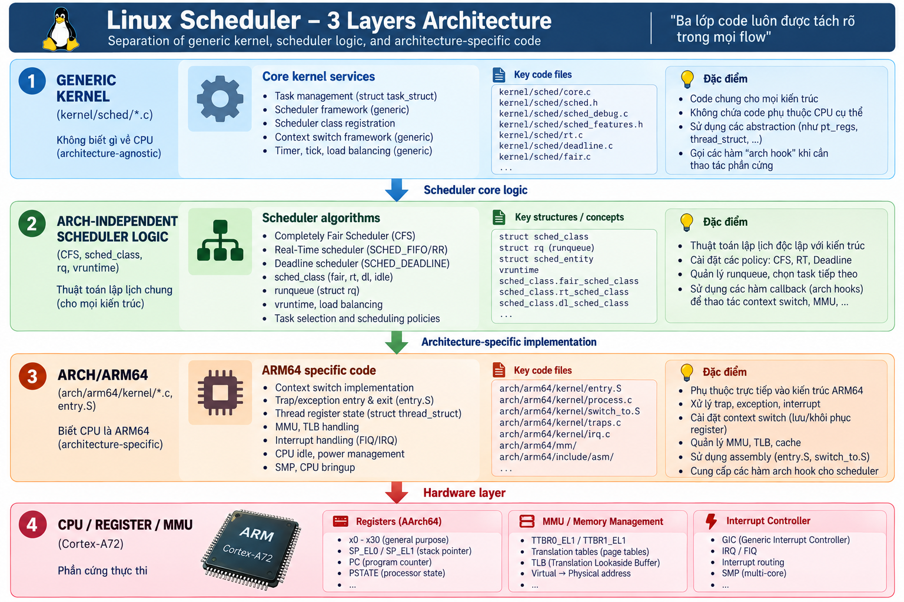
Ranh giới này xuất hiện lặp lại: schedule() hoàn toàn generic; nó gọi context_switch() (vẫn generic) mà bên trong gọi switch_to() — macro này là chỗ đường biên arch bắt đầu; từ đó xuống __switch_to() (C, arch/arm64) rồi cpu_switch_to() (assembly thuần, arch/arm64) chạm thẳng vào thanh ghi CPU.
Cách dùng tài liệu này
Đọc theo đúng thứ tự sidebar nếu mới bắt đầu — nó đi từ khái niệm (PDF) → cấu trúc dữ liệu → tick/preemption → hàm lõi generic → arch ARM64 → SMP → syscall → debug thật. Nếu đã quen CFS, có thể nhảy thẳng vào Chương 19 (switch_to chain) hoặc Chương 23 (Timer → Scheduler) — đây là hai chương ARM64-specific sâu nhất.
NOTE — giải thích thêm · ARM64 NOTE — khác biệt kiến trúc · IMPORTANT — điểm mấu chốt dễ hiểu sai · LEGACY/OBSOLETE — khái niệm PDF đã bị loại bỏ · WARNING — cạm bẫy khi đọc code · SOURCE TIP — lệnh rg/git hữu ích
Expand all/Collapse all mở/đóng mọi khối <details> (thường chứa source excerpt dài). Nút 🌙/☀️ đổi dark/light mode — mặc định theo hệ thống.
PDF Chapter 7 — Tóm tắt scheduler Linux 2.6 (nguồn: Understanding the Linux Kernel)
PDF chia thành 6 phần: 7.1 Scheduling Policy, 7.2 The Scheduling Algorithm, 7.3 Data Structures, 7.4 Functions Used by the Scheduler, 7.5 Runqueue Balancing in Multiprocessor Systems, 7.6 System Calls Related to Scheduling. Tóm tắt từng phần — đây là "concept" sẽ được map sang kernel hiện đại ở Chương 04.
7.1 — Scheduling Policy
- Time-sharing: CPU chia "quantum" cho từng runnable process; timer interrupt làm việc chia sẻ này trong suốt với chương trình.
- 3 lớp process: interactive (cần phản hồi 50–150ms), batch (không cần tương tác, bị phạt), real-time (yêu cầu độ trễ chặt, không bao giờ bị blocked bởi process priority thấp hơn).
- Process Preemption: khi một process vào
TASK_RUNNING, kernel so priority vớicurrent; nếu cao hơn → setTIF_NEED_RESCHEDtrêncurrent→ scheduler chạy khi timer interrupt handler kết thúc. Process bị preempt vẫn ở TASK_RUNNING, chỉ không giữ CPU nữa. - Quantum duration là đánh đổi: ngắn quá → overhead process-switch cao; dài quá → hệ thống "giật", nhưng lý thuyết không ảnh hưởng nhiều tới interactive process vì chúng vẫn preempt được batch process ngay lập tức nhờ priority cao hơn.
7.2 — The Scheduling Algorithm (O(1))
- 3 scheduling classes:
SCHED_FIFO,SCHED_RR(real-time),SCHED_NORMAL(conventional). - Static priority: 100 (cao nhất) → 139 (thấp nhất), đặt qua
nice()/setpriority(). Base time quantum tính từ static priority:(140 − static_prio) × 20msnếu<120,× 5msnếu≥120. - Dynamic priority =
max(100, min(static_prio − bonus + 5, 139));bonus(0–10) phụ thuộc average sleep time — process ngủ nhiều (interactive) được bonus dương (ưu tiên tăng), process CPU-bound liên tục được bonus âm. - Active / Expired arrays: mỗi runqueue giữ 2 tập
prio_array_t(140 danh sách liên kết theo priority + bitmap). Process hết quantum bị chuyển từactivesangexpired; khiactiverỗng, đổi vaiactive ↔ expiredbằng cách hoán đổi 2 con trỏ.
7.3 — Data Structures
struct runqueueper-CPU (quathis_rq()/cpu_rq(n)):active,expired,arrays[2],curr,idle,nr_running,sd(scheduling domain),migration_thread...task_structscheduling fields:thread_info->flags(chứaTIF_NEED_RESCHED),state,prio,static_prio,array(trỏ vào active hoặc expired),sleep_avg,time_slice,policy,cpus_allowed.
7.4 — Functions Used by the Scheduler
scheduler_tick()— mỗi tick: cập nhậttime_slice; nếu hết quantum → refill + chuyển sang expired (batch) hoặc để lại active (interactive nếu chưa starve) + setTIF_NEED_RESCHED.try_to_wake_up()— đổi state →TASK_RUNNING, chọn CPU đích (heuristic cache-affinity), gọiactivate_task()→recalc_task_prio()tính lại dynamic priority từ sleep time, rồiresched_task()nếu priority cao hơncurr.schedule()— hàm trung tâm: disable preempt → xử lý trạng tháiprev(dequeue nếu ngủ) → nếu runqueue rỗng thì đổi vai active/expired →sched_find_first_bit()tìm priority list không rỗng đầu tiên → lấy process đầu danh sách làmnext→context_switch().load_balance()— cân bằng runqueue đa xử lý dựa trên scheduling domains phân cấp.
7.5 — Runqueue Balancing (SMP)
Giới thiệu scheduling domains (từ kernel 2.6.7): cây phân cấp các nhóm CPU, mỗi domain có nhiều sched_group; rebalance_tick() gọi load_balance() theo domain với tần suất khác nhau (thường xuyên hơn khi CPU idle); move_tasks()/can_migrate_task() di chuyển task từ runqueue bận nhất sang runqueue local.
7.6 — System Calls Related to Scheduling
nice(), getpriority()/setpriority(), sched_setscheduler()/sched_getscheduler(), sched_setparam()/sched_getparam(), sched_yield(), sched_get_priority_min/max(), sched_rr_get_interval(), sched_setaffinity()/sched_getaffinity().
active/expired array, prio_array_t, sleep_avg, "interactive delta" formula, recalc_task_prio() — toàn bộ heuristic "đoán process interactive hay batch" của O(1) scheduler đã bị xoá hoàn toàn khỏi kernel từ 2.6.23 (thay bằng CFS). Chi tiết tại Chương 04.
PDF Linux 2.6 vs Linux hiện đại (5.10.241) trên ARM64
Bảng dưới là mapping đầy đủ. Cột "Status": obsolete = khái niệm biến mất hoàn toàn khỏi kernel · changed = còn tồn tại nhưng cơ chế/tên đổi khác · current = còn đúng gần như nguyên vẹn.
| PDF Linux 2.6 concept | Linux hiện đại (5.10.241) | ARM64-specific | Status |
|---|---|---|---|
| O(1) scheduler (toàn bộ thuật toán §7.2) | CFS (fair_sched_class) cho SCHED_NORMAL/BATCH, còn SCHED_FIFO/RR nằm ở rt_sched_class riêng — xem c10 | Không có phần ARM64-riêng ở tầng thuật toán chọn task | obsolete |
active/expired prio_array_t[2] (140 danh sách liên kết + bitmap) | cfs_rq->tasks_timeline: một red-black tree duy nhất, khoá = vruntime — xem c09, c11 | — | obsolete |
static_prio (100–139) là input chính cho base time quantum | static_prio vẫn tồn tại trong task_struct (đặt qua nice), nhưng chỉ dùng để tính sched_entity.load.weight qua bảng sched_prio_to_weight[] — không còn quyết định "quantum" | — | changed |
Dynamic priority = static_prio − bonus + 5 (heuristic "interactive delta") | Không tồn tại khái niệm dynamic priority kiểu này cho CFS. Vị trí trong rbtree quyết định bởi vruntime, tự nhiên hội tụ về công bằng | — | obsolete |
sleep_avg, recalc_task_prio(), "interactive delta" formula (§7.2.1.2) | Thay bằng place_entity() "sleeper boost" đơn giản: task thức dậy được đặt vruntime = max(vruntime, min_vruntime − sched_latency) — một cú hích một lần, không heuristic dài hạn | — | obsolete |
time_slice (unsigned int, số tick còn lại) trong task_struct | Không có "quota tick" cố định. CFS dùng sysctl_sched_latency (6ms) chia cho số task runnable → mỗi task chạy tới khi vruntime vượt task khác quá wakeup_granularity, kiểm ở mỗi tick qua check_preempt_tick() | — | changed |
runqueue struct, field arrays[2], active, expired | struct rq (kernel/sched/sched.h:904) — vẫn per-CPU nhưng chứa 3 sub-runqueue riêng: cfs, rt, dl — xem c08 | Per-CPU qua DEFINE_PER_CPU_SHARED_ALIGNED(struct rq, runqueues), giống mọi arch — không có phần riêng ARM64 | changed |
scheduler_tick() | Tên hàm giữ nguyên, vẫn gọi từ update_process_times() — nhưng đường vào tick đổi: không còn "timer interrupt 1ms cố định" mà qua hrtimer/tick subsystem — xem c13, c23 | Trigger vật lý = ARM Generic Timer (CNTV) qua GIC, không phải PIT/APIC như PDF giả định | changed |
schedule() (toàn bộ logic nằm trong 1 hàm ~200 dòng) | schedule() chỉ còn là wrapper mỏng gọi __schedule() (kernel/sched/core.c:4462) — xem c16 | — | changed |
context_switch() | Tên hàm giữ nguyên, vẫn ở kernel/sched/core.c, nhưng bên trong gọi chuỗi arch riêng — xem c18, c19 | switch_to() → __switch_to() (arch/arm64/kernel/process.c) → cpu_switch_to() (arch/arm64/kernel/entry.S, assembly) — hoàn toàn khác x86 __switch_to_asm/TSS | changed |
load_balance(), scheduling domains, rebalance_tick(), move_tasks() | load_balance() vẫn tồn tại (kernel/sched/fair.c:9836), find_busiest_group() (:9488), nhưng move_tasks() đã tách thành detach_tasks() (:7884) + attach_tasks() (:8037); rebalance_tick() đổi tên thành logic trong trigger_load_balance() gọi từ scheduler_tick() — xem c28 | Không có phần ARM64-riêng — sched_domain build từ device-tree topology (cpu-map) thay vì APIC ID như x86 | changed |
| System calls (nice/setpriority/sched_setscheduler/...) | Toàn bộ vẫn tồn tại với đúng số hiệu POSIX — xem c32 | nice() không có syscall number native trên AArch64 — chỉ tồn tại trong bảng compat 32-bit (unistd32.h:81). Đây là khác biệt ARM64 vs x86 cụ thể, xem box trong c32 | changed |
sleep_avg, "interactive delta", "starvation" check trên expired array) để đoán process nào là interactive. Heuristic này khét tiếng khó tune và có nhiều pathological case (ví dụ X server bị đối xử tệ). CFS (Ingo Molnar, 2.6.23, 2007) bỏ hẳn việc "đoán loại process": chọn thẳng task có vruntime nhỏ nhất trong rbtree — O(log n) thay vì O(1), nhưng với n vài trăm task, log n ~ 8-9 phép so sánh, không đáng kể; đổi lại thuật toán đơn giản, dự đoán được, không cần bảng heuristic nào.
Bản đồ source tree — Linux Scheduler trên cây Kernel/K-S800/Src
Bản đồ dưới lấy trực tiếp từ cây source thật trên máy này (không hardcode từ tài liệu khác).
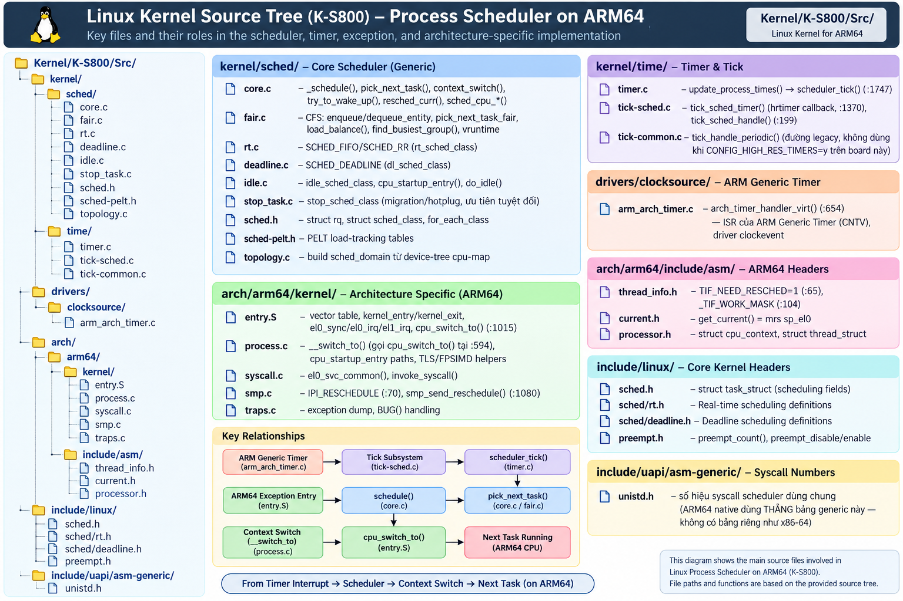
grep -n "^struct rq {" kernel/sched/sched.h
grep -n "extern const struct sched_class" kernel/sched/sched.h
grep -n "SYM_FUNC_START(cpu_switch_to)" arch/arm64/kernel/entry.S
grep -n "scheduler_tick()" kernel/time/timer.c
grep -n "__NR_sched_yield\|__NR_nice" include/uapi/asm-generic/unistd.hARM64 Scheduler — Big Picture
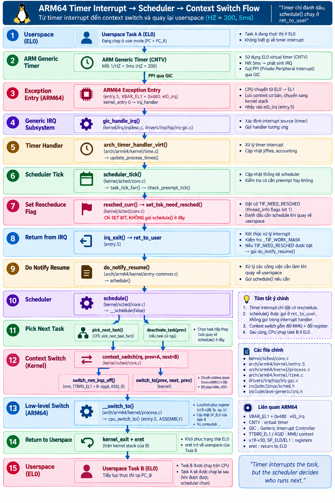
CNTV_CTL_EL0/CNTV_TVAL_EL0) phát PPI (Private Peripheral Interrupt) qua GIC (Generic Interrupt Controller), không phải dây IRQ0 kiểu x86 cũ.2) x86 context switch dùng TSS +
__switch_to_asm đổi ESP/segment; ARM64 dùng cpu_switch_to() — một hàm assembly tuân theo AAPCS64 calling convention, chỉ lưu callee-saved registers (x19-x28, fp, sp, lr) — xem c19.3) x86
current đọc qua per-CPU segment (%gs); ARM64 "chiếm dụng" thanh ghi hệ thống SP_EL0 (vô dụng ở EL1) để giữ thẳng con trỏ task_struct* — xem c20.
task_struct — các field liên quan scheduler
Không dump toàn bộ struct (quá lớn) — chỉ các field scheduler chạm tới, theo đúng yêu cầu.
| Field | Ý nghĩa | Ai update | Ai đọc | Khi nào đổi |
|---|---|---|---|---|
volatile long state / __state | TASK_RUNNING / INTERRUPTIBLE / UNINTERRUPTIBLE / ... | chính task (set_current_state()) hoặc try_to_wake_up() | __schedule() (quyết định deactivate), ttwu | task tự ngủ hoặc bị đánh thức |
on_rq | đang nằm trong runqueue (rbtree/list) hay không — không có nghĩa "đang chạy trên CPU" | enqueue_task()/dequeue_task() | __schedule(), load-balancer | enqueue/dequeue |
prio / static_prio / normal_prio | static_prio: từ nice (chỉ ảnh hưởng CFS load.weight, KHÔNG còn quyết định quantum như PDF §7.2.1.1); normal_prio: priority "nếu không có boost"; prio: priority hiệu lực hiện tại (RT/DL có thể override) | set_user_nice(), __setscheduler_prio() | scheduling class khi chọn task | nice()/setpriority()/sched_setscheduler() |
rt_priority | priority real-time (1–99, POSIX), riêng biệt với prio nội bộ kernel | sched_setscheduler() | rt_sched_class | chỉ RT task |
policy | SCHED_NORMAL/FIFO/RR/BATCH/IDLE/DEADLINE | sched_setscheduler() | chọn sched_class nào áp dụng | syscall |
sched_class | con trỏ hàm tới bảng operations (fair/rt/dl/idle/stop) — xem c10 | __setscheduler_prio() | __schedule() qua for_each_class | đổi policy |
se (struct sched_entity, nhúng) | node trong CFS rbtree — vruntime, load, run_node — xem c09 | update_curr(), place_entity() | pick_next_entity() | mỗi lần chạy/ngủ/thức |
rt / dl (nhúng) | sched_rt_entity / sched_dl_entity — tương đương se nhưng cho RT/deadline | rt.c / deadline.c | rt_sched_class / dl_sched_class | — |
cpu / wake_cpu | cpu: CPU hiện đang (hoặc vừa) chạy task này; wake_cpu: CPU gợi ý khi bị đánh thức | set_task_cpu() | select_task_rq() | migrate/wakeup |
cpus_ptr / nr_cpus_allowed | bitmask CPU được phép chạy (affinity) — cpus_ptr trỏ tới cpus_mask (hoặc mask tạm khi migration-disable) | sched_setaffinity() | select_task_rq(), load-balancer | syscall affinity |
on_cpu | "đang thực sự chạy trên 1 CPU vật lý" (khác on_rq) — dùng trong try_to_wake_up() để spin chờ context switch cũ hoàn tất trên SMP | context_switch()/finish_task_switch() | ttwu() | mỗi context switch |
preempt_count | nằm trong thread_info, không trực tiếp trong task_struct; đếm số lớp "không được preempt" đang lồng (spinlock, IRQ, softirq) — xem c14 | preempt_disable()/enable(), irq_enter/exit | preemptible(), exception return path | mỗi critical section |
flags | PF_KTHREAD (kernel thread), PF_EXITING, PF_IDLE... | copy_process(), do_exit() | context_switch() (quyết định mm handling) | tạo/kết thúc task |
thread (struct thread_struct, field cuối cùng) | arch-specific: cpu_context (x19-x28,fp,sp,pc — nơi cpu_switch_to() lưu/nạp), TLS, FPSIMD state, debug regs | cpu_switch_to(), __switch_to() | cpu_switch_to() | mỗi context switch |
mm / active_mm | mm: address space thật (NULL nếu kernel thread); active_mm: mm đang "mượn" để chạy — xem c31 | context_switch(), exec_mmap() | switch_mm() | exec/exit/kernel-thread switch |
thread_info là field đầu tiên của task_struct (không nằm ở đáy kernel stack như arch cũ/x86 truyền thống) vì CONFIG_THREAD_INFO_IN_TASK=y trên ARM64 — hệ quả: current_thread_info() chỉ là ép kiểu con trỏ current, không cần mask stack pointer. Xem c20.
struct rq — runqueue per-CPU
rq là gì? Mỗi CPU logic có đúng một struct rq — nó gom mọi trạng thái scheduler cục bộ của CPU đó: task đang chạy, 3 sub-runqueue (CFS/RT/DL), clock, load, scheduling domain. Mỗi CPU có rq riêng — đây là lý do CFS scale tốt theo số CPU: chọn task tiếp theo trên CPU0 không cần khoá rq của CPU1.
Lưu ở đâu / per-CPU thế nào? Khai báo DEFINE_PER_CPU_SHARED_ALIGNED(struct rq, runqueues) trong kernel/sched/core.c — dùng cơ chế per-CPU variable chung của kernel (không phải cái gì ARM64-riêng): mỗi CPU có bản sao vật lý riêng trong vùng bộ nhớ per-CPU; cpu_rq(n) = &per_cpu(runqueues, n), this_rq() = rq của CPU đang chạy code hiện tại. CPU0 và CPU1 có rq khác nhau đơn giản vì chúng là 2 bản sao khác nhau của cùng một vùng nhớ per-CPU — không có "chia sẻ" nào giữa chúng trừ khi code chủ động lock rq2 từ CPU0 (load balancing).
| Field (thật, từ source) | Ý nghĩa |
|---|---|
raw_spinlock_t lock | bảo vệ toàn bộ trạng thái rq — hầu hết thao tác enqueue/dequeue/pick giữ lock này |
unsigned int nr_running | tổng số task runnable trên CPU này (mọi class cộng lại) |
u64 nr_switches | đếm số lần context switch đã xảy ra trên CPU này |
struct cfs_rq cfs / struct rt_rq rt / struct dl_rq dl | 3 sub-runqueue nhúng trực tiếp (không phải con trỏ) — xem c09 |
unsigned long nr_uninterruptible | số task đã từng ở rq này giờ đang ngủ TASK_UNINTERRUPTIBLE — chỉ tổng trên mọi CPU mới có nghĩa |
struct task_struct __rcu *curr | task đang thực sự chạy trên CPU này — chính là current khi đọc từ CPU đó |
struct task_struct *idle | con trỏ tới idle task (swapper) của CPU này — luôn tồn tại, chạy khi nr_running==0 |
struct task_struct *stop | task đặc biệt của stop_sched_class — ưu tiên tuyệt đối, dùng cho migration/CPU hotplug |
u64 clock / clock_task / clock_pelt | đồng hồ nội bộ của rq (cache lại để tránh gọi sched_clock() nhiều lần trong 1 lần schedule); clock_task trừ đi thời gian IRQ/steal |
struct root_domain *rd / struct sched_domain __rcu *sd | gốc và domain hiện hành cho load balancing — xem c29 |
int active_balance / int push_cpu | cờ + CPU đích khi cần "active balance" (đánh thức stop task để ép migrate) |
int cpu / int online | chỉ số CPU sở hữu rq này; rq có online hay không (CPU hotplug) |
struct sched_avg avg_rt / avg_dl / avg_irq | PELT (Per-Entity Load Tracking) cho RT/DL/IRQ time — dùng trong tính cpu_capacity còn lại cho CFS |
u64 idle_stamp / avg_idle | thời điểm rq bắt đầu idle + trung bình thời gian idle — dùng để quyết định có đáng idle_balance() hay không |
struct hrtimer hrtick_timer | (nếu CONFIG_SCHED_HRTICK) hrtimer riêng cho preemption chính xác dưới mức 1 tick |
active, expired, arrays[2], best_expired_prio, timestamp_last_tick — tất cả không còn trong struct rq hiện đại. Field còn khớp gần nguyên: lock, nr_running, curr, idle, sd, active_balance, push_cpu. Field migration_thread (PDF) đã đổi cơ chế thành stop task (per-CPU stop_sched_class task) — migration giờ là một schedule bình thường của stop-class, không phải kernel thread riêng đánh thức thủ công.
sched_entity & cfs_rq
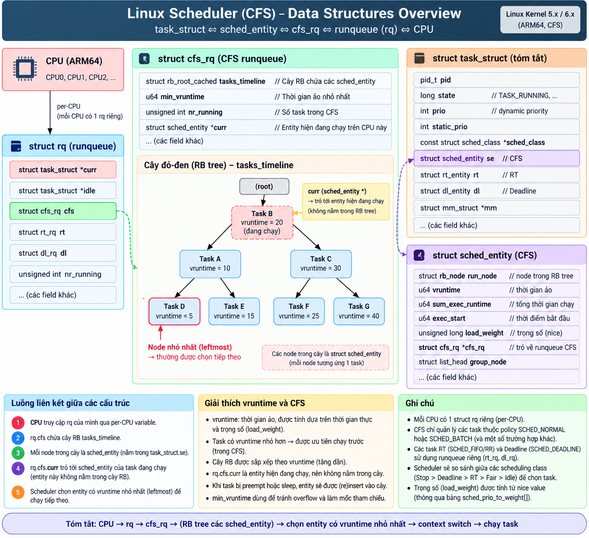
cfs_rq->curr, tách riêng. rbtree chỉ chứa các task runnable nhưng chưa được chạy. Khi schedule() chọn task mới, task cũ (nếu vẫn runnable) được enqueue lại vào cây, và task mới được rút ra làm curr. Đây là lý do "chọn task tiếp theo" luôn là O(log n) tra cứu + O(1) rút node leftmost, chứ không phải duyệt toàn cây.
sched_class — kiến trúc phân lớp scheduler
Thứ tự ưu tiên giữa các lớp — lấy trực tiếp từ khai báo thật trong source, không suy đoán:
extern const struct sched_class stop_sched_class; // ưu tiên TUYỆT ĐỐI — migration/hotplug
extern const struct sched_class dl_sched_class; // SCHED_DEADLINE
extern const struct sched_class rt_sched_class; // SCHED_FIFO / SCHED_RR
extern const struct sched_class fair_sched_class; // SCHED_NORMAL / SCHED_BATCH (CFS)
extern const struct sched_class idle_sched_class; // idle task — chạy khi không còn gì khác
#define for_each_class(class) \
for (class = &stop_sched_class; class; class = next_class(class))Thứ tự stop → deadline → RT → fair → idle chính là thứ tự "quyền ưu tiên tuyệt đối": scheduler không bao giờ chọn một task ở lớp thấp hơn nếu còn task runnable ở lớp cao hơn — bất kể priority số học bên trong lớp đó.
- Purpose
- Duyệt
for_each_classtừstopxuốngidle, hỏi từng lớp "có task nào của mày runnable không?", trả về task đầu tiên tìm được. - Caller
__schedule()tại core.c:4548 —next = pick_next_task(rq, prev, &rf);- Callee
class->pick_next_task(rq)tại core.c:4414 — con trỏ hàm ảo, gọi implementation riêng của từng lớp (pick_next_task_fair(),pick_next_task_rt(), ...)
// core.c ~4390: nếu rq->nr_running == rq->cfs.h_nr_running (không có RT/DL nào runnable)
// → gọi thẳng pick_next_task_fair(), bỏ qua vòng lặp for_each_class để tiết kiệm nhánh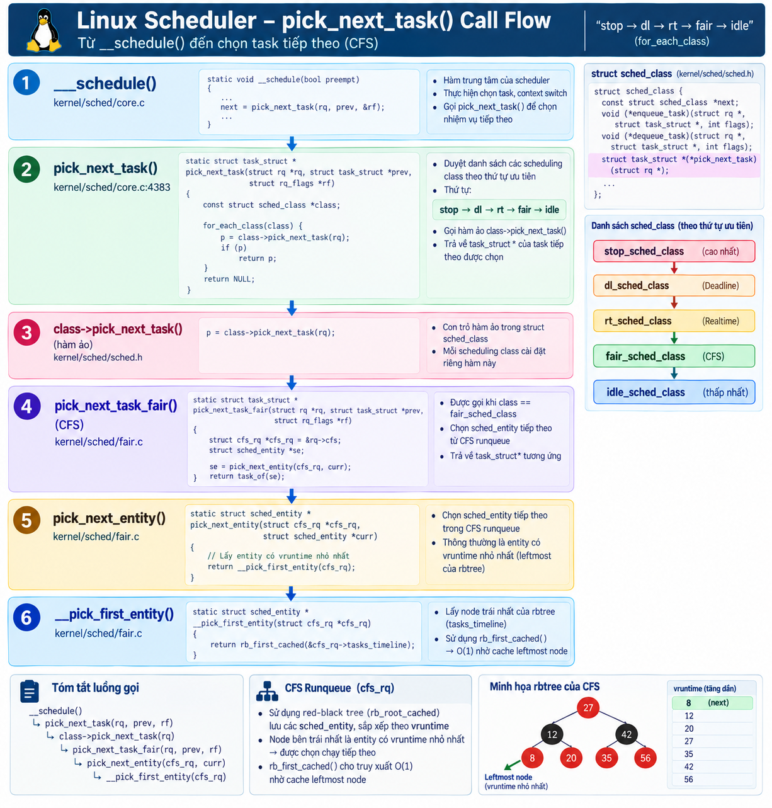
CFS deep dive — enqueue / dequeue / update_curr
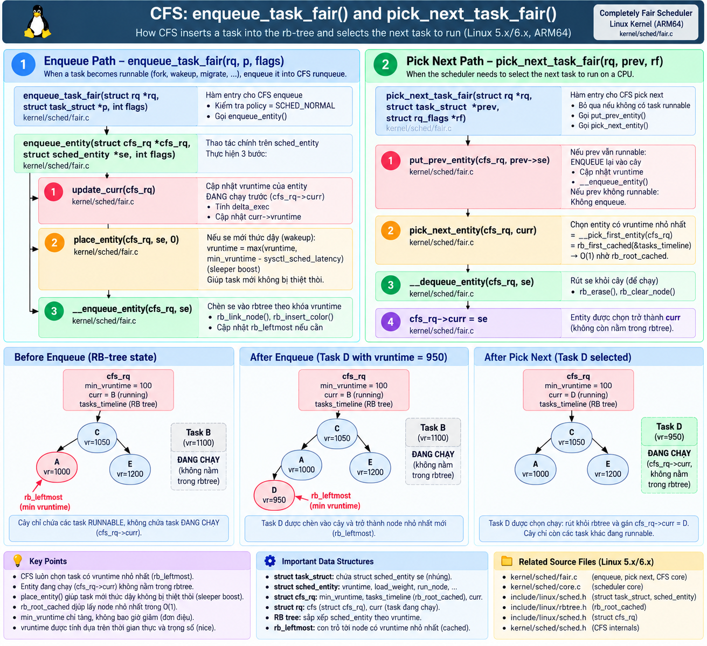
- Purpose
- Tính thời gian thực (ns) task đang chạy đã dùng kể từ lần
update_currtrước, quy đổi ra "thời gian ảo" theo trọng số, cộng dồn vàovruntime. - Gọi khi nào
- Mỗi
scheduler_tick(), mỗienqueue_entity(), mỗidequeue_entity(), và ngay đầupick_next_task_fair()— bất cứ lúc nào cần vruntime chính xác trước khi so sánh.
delta_exec = now - curr->exec_start; // thời gian thực (ns) vừa chạy
curr->vruntime += calc_delta_fair(delta_exec, curr); // += delta_exec * NICE_0_LOAD / se->load.weight
curr->exec_start = now;Task nice thấp (ưu tiên cao) có load.weight lớn hơn → vruntime tăng chậm hơn mỗi ns thực → ở lại bên trái rbtree lâu hơn → được chọn chạy thường xuyên hơn. Đây là toàn bộ cơ chế "priority" của CFS — không cần bảng nào như sched_prio_to_weight[] ngoài việc đổi nice → weight ban đầu.
vruntime & nice — vì sao task vruntime nhỏ luôn được chọn
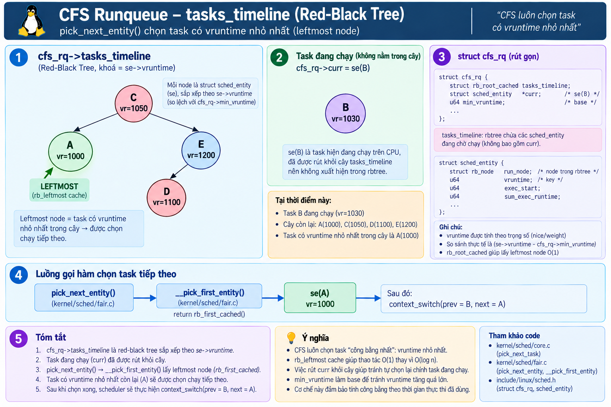
BẤT BIẾN CFS: luôn chọn entity có vruntime nhỏ nhất. Task đang chạy → vruntime của nó tăng dần → tới lúc nó vượt qua vruntime của A → A trở thành leftmost mới → check_preempt_tick()/check_preempt_wakeup() phát hiện và set TIF_NEED_RESCHED. Theo thời gian, mọi vruntime hội tụ về nhau → đó chính là "công bằng" (fair) trong tên CFS.
dynamic_priority = max(100, min(static_prio − bonus + 5, 139)), bonus tính từ sleep_avg qua bảng tra (Table 7-3, 11 mức).Kernel hiện đại: không có "dynamic priority" dạng số nguyên nào cho CFS. Vị trí trong rbtree (tức "ai chạy trước") được quyết định hoàn toàn bởi
vruntime — một giá trị liên tục, tự nhiên phản ánh lịch sử CPU-time đã dùng, không cần bảng tra rời rạc.Vì sao đổi: bảng tra rời rạc + ngưỡng cứng (như "sleep 700ms → interactive") tạo ra hành vi bậc thang khó dự đoán và dễ bị game (một số ứng dụng cũ cố tình ngủ ngắn để giữ bonus). vruntime liên tục loại bỏ toàn bộ lớp vấn đề này.
scheduler_tick()
- Purpose
- Chạy mỗi tick (HZ=200 trên board này → mỗi 5ms), cập nhật thống kê CPU-time của task đang chạy và quyết định có cần preempt hay không.
- Context
- Interrupt context (chạy trong tick handler, không phải process context)
- IRQ state
- IRQ đang disabled (đang trong IRQ handler)
- Callees
task_tick(rq, curr, 0)→curr->sched_class->task_tick(rq, curr, 0)→ nếu CFS:task_tick_fair()→entity_tick()→update_curr()+check_preempt_tick()
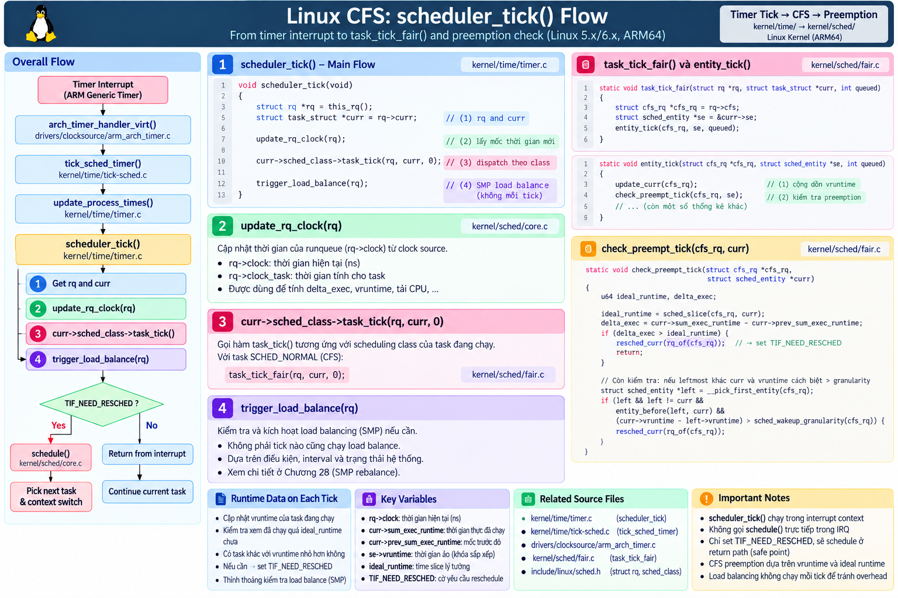
scheduler_tick() giảm current->time_slice; hết quantum → dequeue_task() khỏi active array, set_tsk_need_resched(), tính lại dynamic priority, refill quantum, đẩy vào active hoặc expired tuỳ interactive/batch.Kernel hiện đại: không có "time_slice" đếm ngược per-task.
check_preempt_tick() so sánh sum_exec_runtime tích luỹ với sched_slice() (tính động từ sysctl_sched_latency chia theo trọng số, không phải hằng số cố định theo static_prio như PDF). Không có khái niệm "hết quantum → chuyển expired" — task vẫn ở nguyên trong rbtree, chỉ đổi vị trí tương đối khi vruntime tăng.
Preemption — voluntary, involuntary, từ interrupt, từ wakeup
| Loại | Trigger | Cơ chế |
|---|---|---|
| Voluntary | task tự gọi schedule() khi chờ resource (mutex, I/O, wait_event()) | gọi trực tiếp, không qua TIF_NEED_RESCHED |
| Involuntary (tick) | scheduler_tick() thấy task hết "ideal_runtime" | check_preempt_tick() → resched_curr() → set cờ, schedule() chạy SAU khi tick handler xong — xem c15 |
| Từ interrupt (khác tick) | driver ISR đánh thức 1 task priority cao hơn | wake_up_interruptible() → try_to_wake_up() → check_preempt_curr() → resched_curr() nếu cần |
| Từ wakeup | task mới enqueue có vruntime nhỏ hơn curr đáng kể | ttwu_do_wakeup() → check_preempt_wakeup() (CFS) so wakeup_gran |
preempt_count += HARDIRQ_OFFSET (qua irq_enter()) — gọi schedule() trong trạng thái này sẽ BUG() (kernel có __might_sleep() assertion). Lý do sâu hơn: IRQ handler có thể đang chạy trên IRQ stack riêng (không phải kernel stack của task bị ngắt), và có thể đang giữ spinlock của driver — đổi task giữa chừng sẽ làm hỏng bất biến "process context mới được ngủ/switch". Vì vậy kernel tách làm 2 bước: (1) handler chỉ set cờ TIF_NEED_RESCHED, (2) schedule() thật sự chạy ở safe point sau khi handler kết thúc — xem c15.
ret_to_user (entry.S) — luôn luôn kiểm tra TIF_NEED_RESCHED, bất kể CONFIG_PREEMPT. Nếu IRQ ngắt lúc đang ở EL1 (giữa syscall khác, hoặc kernel code), safe point chỉ tồn tại nếu CONFIG_PREEMPT=y và preempt_count()==0 lúc đó — qua arm64_preempt_schedule_irq() → preempt_schedule_irq(). Board này build CONFIG_PREEMPT=y, CONFIG_PREEMPTION=y nên có preemption đầy đủ ở cả hai trường hợp.
TIF_NEED_RESCHED trên ARM64
// arch/arm64/include/asm/thread_info.h
#define TIF_NEED_RESCHED 1 // bit 1 trong thread_info->flags
#define _TIF_NEED_RESCHED (1 << TIF_NEED_RESCHED)
#define _TIF_WORK_MASK (_TIF_NEED_RESCHED | _TIF_SIGPENDING | ...) // :104
// arch/arm64/kernel/entry.S:764 — trong ret_to_user
and x2, x19, #_TIF_WORK_MASK // x19 đã load từ tsk->thread_info.flags lúc kernel_entry
cbnz x2, work_pending // bất kỳ bit nào trong mask bật → xử lý trước khi eret- Purpose
- Đánh dấu
rq->currcần bị reschedule "ngay khi có thể" — xử lý cả trường hợp local CPU lẫn remote CPU (SMP). - Lock
- Yêu cầu giữ sẵn
rq->lock(lockdep_assert_held)
void resched_curr(struct rq *rq)
{
struct task_struct *curr = rq->curr;
int cpu;
lockdep_assert_held(&rq->lock);
if (test_tsk_need_resched(curr))
return; // đã set rồi, khỏi làm lại
cpu = cpu_of(rq);
if (cpu == smp_processor_id()) {
set_tsk_need_resched(curr); // local: chỉ cần set bit
set_preempt_need_resched();
return;
}
if (set_nr_and_not_polling(curr))
smp_send_reschedule(cpu); // REMOTE: cần đánh thức CPU kia bằng IPI!
else
trace_sched_wake_idle_without_ipi(cpu);
}try_to_wake_up() trên CPU0 vừa đánh thức 1 task priority cao và đặt nó vào rq1 của CPU1) — chỉ set bit TIF_NEED_RESCHED trong bộ nhớ là không đủ, vì CPU1 có thể đang chạy code khác không bao giờ đọc lại cờ đó. Kernel phải bắn một IPI (Inter-Processor Interrupt) để "đánh thức" CPU1 ngay lập tức.// arch/arm64/kernel/smp.c
enum ipi_msg_type { ... IPI_RESCHEDULE, ... }; // :70
void smp_send_reschedule(int cpu) { // :1080
smp_cross_call(cpumask_of(cpu), IPI_RESCHEDULE); // :1082
}smp_cross_call() ghi vào GICD để GIC bắn SGI tới đúng CPU đích; CPU đó nhận SGI như một IRQ bình thường (vector el1_irq hoặc el0_irq tuỳ đang ở EL nào), handler tương ứng (ipi_handler, case IPI_RESCHEDULE tại smp.c:971) không làm gì thêm ngoài việc "wake up" — bản thân việc CPU vào IRQ handler rồi thoát ra qua ret_to_user/preempt_schedule_irq đã đủ để trigger check TIF_NEED_RESCHED.
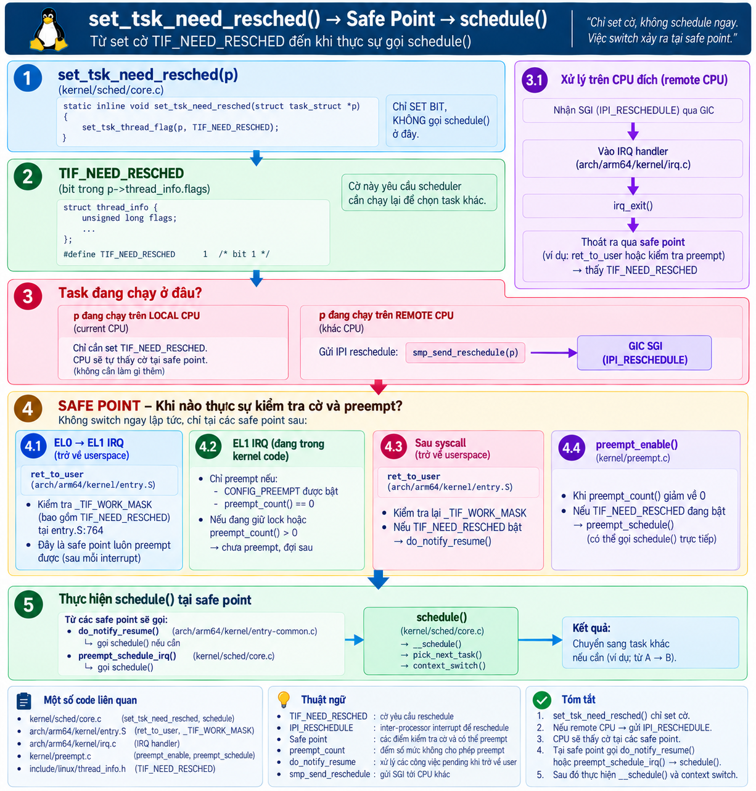
schedule() / __schedule()
- Purpose
- Hàm lõi thật sự chọn task tiếp theo và thực hiện context switch.
schedule()chỉ là wrapper mỏng gọi__schedule(false)trong vòng lặp. - Callers
schedule()(voluntary),preempt_schedule()/preempt_schedule_irq()(involuntary, gọi vớipreempt=true),do_notify_resume()(ARM64: từret_to_userkhi có _TIF_NEED_RESCHED sau IRQ từ EL0)- IRQ state
- Disable IRQ ngay từ đầu (giữ
rq->lockvớiraw_spin_lock_irq) - Preempt state
preempt_disable()ở đầuschedule()(không phải trong__schedule) — tự nó không được preempt trong lúc chọn task
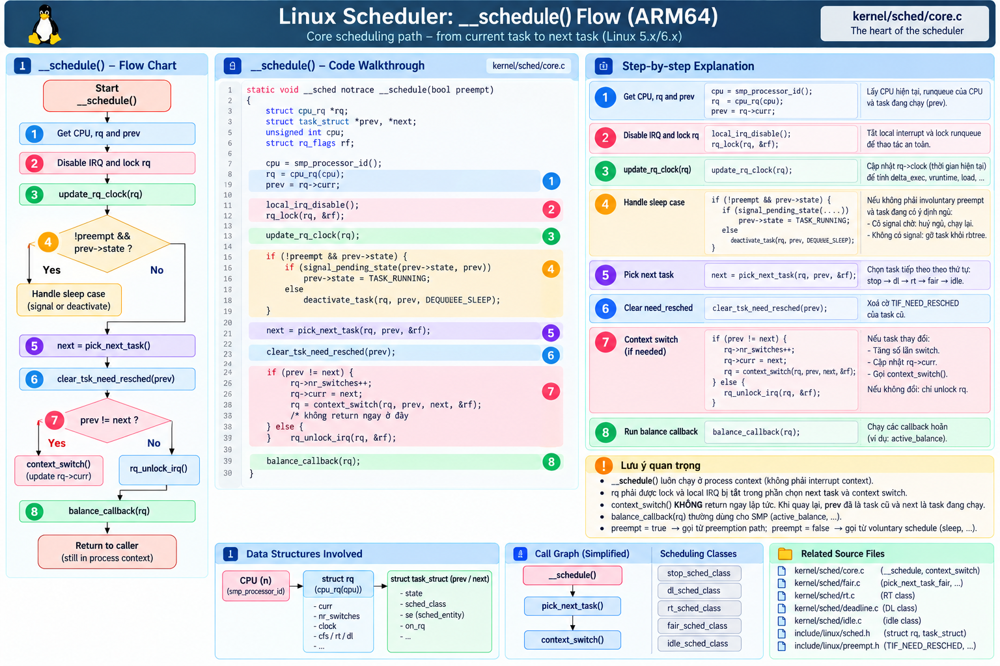
sched_find_first_bit trên bitmap 140-bit) nằm trong một hàm schedule() ~200 dòng. Kernel hiện đại tách bạch rõ: schedule() (thin wrapper) → __schedule() (điều phối) → pick_next_task() (chọn class + entity, xem c17) → context_switch() (đổi mm + registers, xem c18). Việc tách lớp này phản ánh đúng kiến trúc sched_class pluggable — mỗi lớp tự quyết định thuật toán chọn task của riêng nó, __schedule() không biết gì về CFS/RT/DL bên trong.
pick_next_task() — chi tiết
Đã trace call chain thật ở Chương 10: pick_next_task() (core.c:4383) → class->pick_next_task(rq) (:4414) → (nếu CFS) pick_next_task_fair() → pick_next_entity() → __pick_first_entity().
stop → dl → rt → fair → idle (thứ tự ưu tiên tuyệt đối cố định), lớp đầu tiên còn task runnable thắng; bên trong lớp đó, thuật toán riêng của lớp quyết định (CFS: leftmost rbtree theo vruntime; RT: FIFO/RR theo priority 1-99; DL: earliest deadline first).
context_switch()
- Purpose
- Chuẩn bị và thực hiện việc đổi address space (nếu cần) rồi đổi CPU register context — đây là điểm gặp nhau cuối cùng giữa generic scheduler và arch ARM64.
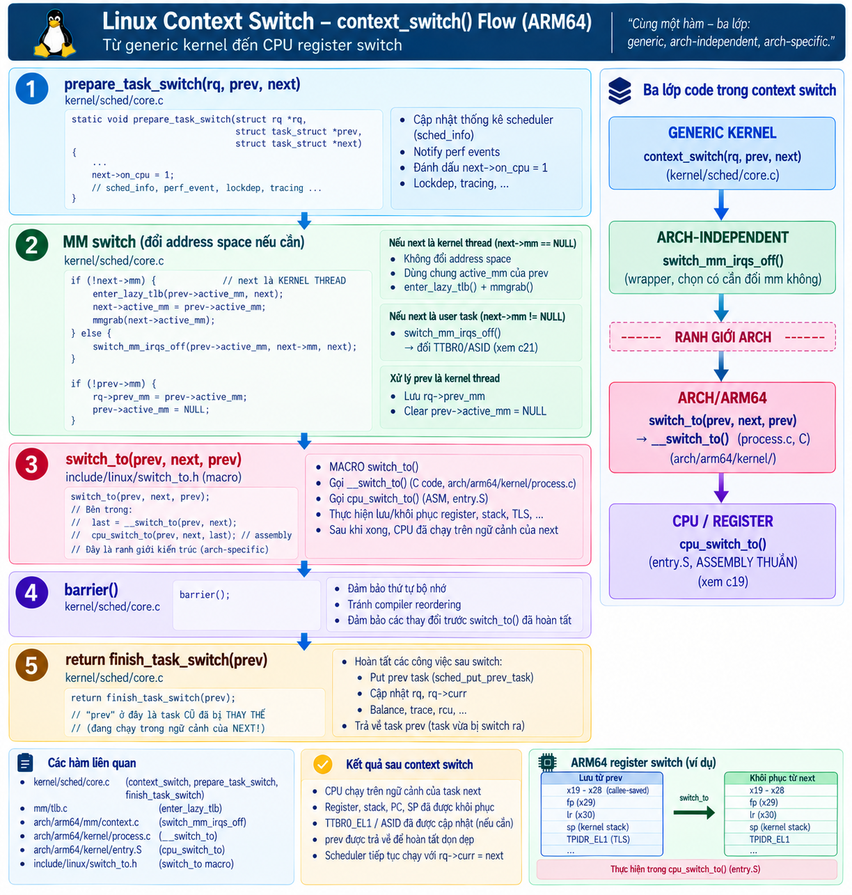
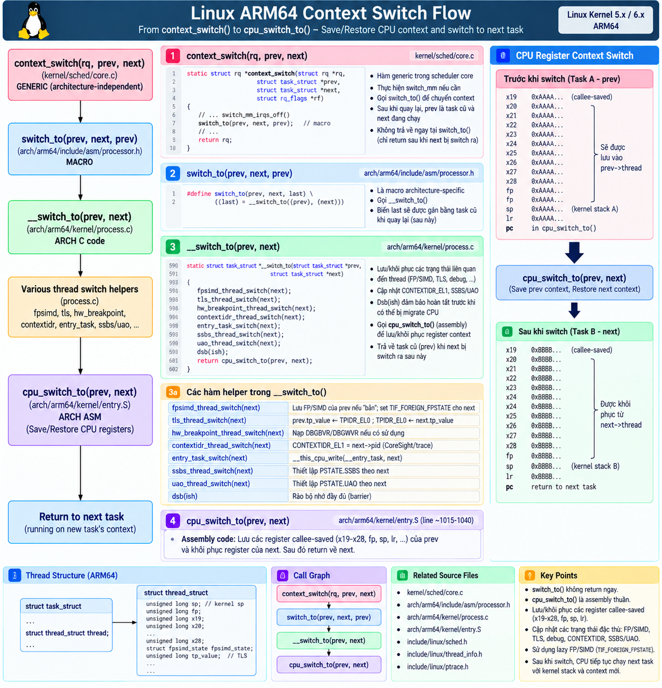
switch_to() / __switch_to() / cpu_switch_to() — ARM64 register context
Ba lớp, ai làm gì:
context_switch(rq, prev, next) [core.c — GENERIC]
│
▼
switch_to(prev, next, prev) [arch/arm64/include/asm/processor.h — MACRO]
│ #define switch_to(prev,next,last) ((last) = __switch_to(prev,next))
▼
__switch_to(prev, next) [arch/arm64/kernel/process.c — ARCH C]
│
├─► fpsimd_thread_switch(next) LƯU FP/SIMD của prev NẾU "bẩn" (lazy);
│ set TIF_FOREIGN_FPSTATE cho next (nạp lười khi chạm lệnh FP)
├─► tls_thread_switch(next) prev.tp_value ← TPIDR_EL0 ; TPIDR_EL0 ← next.tp_value
├─► hw_breakpoint_thread_switch(next) nạp DBGBVR/DBGWVR nếu có dùng
├─► contextidr_thread_switch(next) CONTEXTIDR_EL1 = next->pid (CoreSight/trace)
├─► entry_task_switch(next) __this_cpu_write(__entry_task, next)
├─► ssbs/uao_thread_switch(next) PSTATE.SSBS/UAO theo next
├─► dsb(ish) rào đầy đủ trước khi có thể bị migrate CPU
│
└─► last = cpu_switch_to(prev, next) [entry.S:1015-1040 — ARCH ASM THUẦN]
(process.c:594: "last = cpu_switch_to(prev, next);")
- Purpose
- Lưu 13 giá trị (đủ cho một lời gọi hàm C bình thường theo AAPCS64) của
prevvàoprev->thread.cpu_context, nạp 13 giá trị tương ứng củanext, rồiret. - ARM64 impact
- Đây LÀ toàn bộ ARM64 context switch ở tầng thanh ghi CPU — không còn tầng nào sâu hơn.
mov x10, #THREAD_CPU_CONTEXT ; offset của thread.cpu_context trong task_struct
add x8, x0, x10 ; x8 = &prev->thread.cpu_context
mov x9, sp
stp x19, x20, [x8], #16 ; LƯU prev: callee-saved x19-x28 (10 thanh ghi)
stp x21, x22, [x8], #16
stp x23, x24, [x8], #16
stp x25, x26, [x8], #16
stp x27, x28, [x8], #16
stp x29, x9, [x8], #16 ; fp (x29) và sp hiện tại (qua x9)
str lr, [x8] ; pc ← lr (địa chỉ SAU "bl cpu_switch_to" trong __switch_to)
add x8, x1, x10 ; x8 = &next->thread.cpu_context
ldp x19, x20, [x8], #16 ; KHÔI PHỤC next
ldp x21, x22, [x8], #16
ldp x23, x24, [x8], #16
ldp x25, x26, [x8], #16
ldp x27, x28, [x8], #16
ldp x29, x9, [x8], #16 ; fp, sp (vào x9 trước)
ldr lr, [x8] ; lr ← next->cpu_context.pc
mov sp, x9 ; ◄◄◄ ĐỔI KERNEL STACK — từ đây "đang đứng" trên stack next
msr sp_el0, x1 ; ◄◄◄ current = next (xem chi tiết ở c20)
ret ; ◄◄◄ nhảy tới lr = next->cpu_context.pc| Instruction | Thanh ghi | Lưu vào / khôi phục từ | Struct field |
|---|---|---|---|
stp x19,x20,...,x27,x28 | x19-x28 (callee-saved theo AAPCS64) | prev->thread.cpu_context.x19..x28 | struct cpu_context (processor.h) |
stp x29, x9 | x29 (frame pointer) + sp (đã copy vào x9) | cpu_context.fp, cpu_context.sp | — |
str lr | x30 (link register) | cpu_context.pc — "next sẽ tiếp tục chạy TỪ ĐÂY khi được chọn lại" | — |
mov sp, x9 | SP_EL1 | kernel stack của next — "đổi sp = đổi task" (kernel stack chính là "task đang làm gì") | task_struct->stack |
msr sp_el0, x1 | SP_EL0 (chiếm dụng làm con trỏ current) | next (task_struct*) | xem c20 |
cpu_switch_to() chỉ tuân theo AAPCS64 — quy ước gọi hàm C chuẩn, không phải "lưu toàn bộ CPU state" kiểu interrupt: x0-x18 là caller-saved, C ABI cho phép bất kỳ lời gọi hàm nào phá chúng — nếu compiler cần giữ giá trị sống, nó tự spill vào stack frame của __switch_to (nằm trên kernel stack, tự động "đi theo" khi sp đổi). FP/SIMD (V0-V31, >500 byte) được fpsimd_thread_switch() lưu lười (lazy) — chỉ khi thực sự "bẩn" — nên không cần trong cpu_switch_to. PSTATE không cần vì NZCV là caller-saved, còn DAIF luôn ở cùng trạng thái (IRQ off, giữ rq->lock) tại mọi điểm gọi __schedule.
last của switch_tox0 không bị cpu_switch_to ghi đè — nó vẫn giữ giá trị từ lần B tự gọi cpu_switch_to trước đó (tức "prev" của B lúc B ngủ = một task Z nào đó). Vì vậy __switch_to trả về Z, và context_switch() ở c18 gọi finish_task_switch(Z) — dọn dẹp đúng task đã bị B "thay thế", không phải task mà scheduler nghĩ mình vừa switch từ (biến prev cục bộ trong __schedule() đã bị compiler giữ nguyên qua lệnh gọi, nhưng thực thi thật lại nhảy tới điểm code của B — đây chính xác là lý do switch_to cần 3 tham số thay vì 2).
current trên ARM64 — SP_EL0
static __always_inline struct task_struct *get_current(void)
{
unsigned long sp_el0;
asm ("mrs %0, sp_el0" : "=r" (sp_el0)); // asm THÔ (không dùng read_sysreg) để
return (struct task_struct *)sp_el0; // compiler được phép CACHE giá trị 1 hàm
}
#define current get_current()
// thread_info là FIELD ĐẦU TIÊN của task_struct (CONFIG_THREAD_INFO_IN_TASK=y)
#define current_thread_info() ((struct thread_info *)current) // chỉ ép kiểu, 0 offsetSP_EL0). Ở EL1 (kernel), thanh ghi này không có nghĩa "stack pointer" nào cả (EL1 dùng SP_EL1) — Linux "mượn" chỗ trống này để giữ con trỏ task_struct*. Vì mỗi CPU vật lý có bộ thanh ghi hệ thống riêng, CPU0 và CPU1 tự nhiên có current khác nhau mà không cần bất kỳ khoá hay bảng per-CPU nào — đọc current chỉ là 1 lệnh mrs, không chạm bộ nhớ, không thể cache-miss.
Ở EL0 (user đang chạy): SP_EL0 = SP thật của USER STACK
Ở EL1 (kernel đang chạy): SP_EL0 = con trỏ current (task_struct*) ◄ "chiếm dụng"
SP (mà kernel dùng) = SP_EL1 = đỉnh kernel stack 16KB của task
EL0 → EL1 (exception): kernel_entry ĐỌC SP_EL0 (=SP user) ra x21 → lưu vào pt_regs.sp
RỒI GHI current vào SP_EL0 (msr sp_el0, tsk từ per-CPU __entry_task)
EL1 → EL0 (eret): kernel_exit GHI pt_regs.sp NGƯỢC LẠI vào SP_EL0 (khôi phục SP user)
Context switch (cpu_switch_to, xem c19):
msr sp_el0, x1 ← x1 = next ⇒ TỪ DÒNG NÀY, current trên CPU này = next
current = đọc thread_info ở đáy kernel stack bằng SP & ~(THREAD_SIZE-1) — 1 phép AND + 1 load bộ nhớ, và nguy hiểm: nếu kernel stack bị overflow, thread_info (và do đó current) có thể bị hỏng. ARM64 (từ 4.14, CONFIG_THREAD_INFO_IN_TASK=y) tách hẳn: current = 1 lệnh mrs, 0 truy cập bộ nhớ, và stack overflow không thể làm hỏng nó vì thread_info không nằm trên stack.
MM switch — switch_mm(), TTBR0/TTBR1_EL1, ASID
- WHAT
- Đổi address space đang active của CPU — tức đổi
TTBR0_EL1(base của page table user) và ASID (tag phân biệt TLB entry của process nào). - WHY
- Nếu không tag TLB bằng ASID, mỗi lần đổi process bắt buộc phải
tlbi vmalle1(flush toàn bộ TLB) — quá đắt. ASID cho phép TLB entry của process cũ NẰM LẠI trong TLB (chỉ bị bỏ qua vì lệch ASID), không cần flush.
if (!next->mm) { // next là KERNEL THREAD — xem c31
enter_lazy_tlb(prev->active_mm, next); // KHÔNG đụng TTBR0, chi phí MMU = 0
} else if (prev->active_mm == next->mm) { // thread CÙNG process (CLONE_VM)
// KHÔNG gọi __switch_mm — TLB dùng chung, còn nóng nguyên, 0 chi phí MMU
} else {
check_and_switch_context(next->mm); // process KHÁC mm_struct — xem dưới
}asid = atomic64_read(&mm->context.id);
if (active_asids[cpu] còn hợp lệ && cùng generation && cmpxchg thành công) {
goto switch_mm_fastpath; // KHÔNG lock, KHÔNG flush TLB
}
// slow path (hiếm — rollover ASID, ~1 lần mỗi 65536 mm được tạo):
// raw_spin_lock(&cpu_asid_lock); cấp ASID mới; nếu CPU nợ 1 lần flush từ rollover
// trước đó → local_flush_tlb_all() (ĐẮT — chỉ ở slow path)ttbr1 = read_sysreg(ttbr1_el1); // = swapper_pgd | ASID_cũ<<48
ttbr1 = (ttbr1 & ~TTBR_ASID_MASK) | (asid << 48);
msr ttbr1_el1, ttbr1 ; isb() // ① đổi ASID TRƯỚC — kernel pgd không đổi
msr ttbr0_el1, ttbr0 ; isb() // ② rồi mới đổi bảng trang userTCR_EL1.A1 = 1 đưa 16-bit ASID vào TTBR1_EL1[63:48] thay vì TTBR0_EL1. Điều này tách được bước ① (đổi ASID) khỏi bước ② (đổi con trỏ page-table user) — giữa hai lệnh msr, TTBR0 vẫn trỏ pgd CŨ nhưng ASID đã MỚI ⇒ mục TLB của pgd cũ mang ASID cũ ⇒ MMU không dùng (lệch ASID) ⇒ không có cửa sổ "mapping bẩn" giữa hai lệnh msr. Đây cũng là cơ chế cho phép KPTI (Kernel Page Table Isolation) lật TTBR1 (kernel pgd ↔ trampoline pgd) mỗi lần vào/ra EL1 mà không phải đụng ASID.
msr ttbr0/ttbr1_el1 + 2 isb chỉ tốn ~50-100 chu kỳ. Chi phí thật là TLB miss hàng loạt sau đó: các mục TLB của task B (nếu có) có thể đã bị task A đẩy ra trong lúc A chạy (cạnh tranh cùng bộ TLB vật lý) — mỗi lần B chạm VA chưa có trong TLB phải page-table walk 4 tầng (PGD→PUD→PMD→PTE). ASID không cứu được phần này — nó chỉ loại bỏ cú flush toàn bộ bắt buộc (còn tệ hơn nhiều vì xoá SẠCH mọi mục, không chỉ mục bị evict).
ARM64 Exception Entry — vector table, pt_regs
VBAR_EL1 → base của "vectors" (arch/arm64/kernel/entry.S, mỗi entry căn 0x80 byte)
Cur EL, SP_EL0 (EL1t) 0x000 sync_invalid · 0x080 irq_invalid · ...
Cur EL, SP_ELx (EL1h) 0x200 el1_sync (fault/BUG trong kernel)
0x280 el1_irq (IRQ khi ĐANG Ở KERNEL)
Lower EL, AArch64 0x400 el0_sync ◄ SVC/page-fault/undef từ user 64-bit
0x480 el0_irq ◄ IRQ khi USER đang chạy (đường của timer tick)
Lower EL, AArch32 0x600 el0_sync_compat (32-bit compat, không dùng cho SVC64)
SPSR_EL1 ← PSTATE hiện tại (của EL0) ELR_EL1 ← địa chỉ lệnh BỊ NGẮT
ESR_EL1 ← nguyên nhân exception PSTATE → EL1h, DAIF mask (IRQ/FIQ/debug off)
SP ← SP_EL1 PC ← VBAR_EL1 + 0x480 (el0_irq)
SP_EL0: KHÔNG đổi (vẫn = SP user)stp x0..x29, [sp,#...] ; str x30 ; lưu x0-x30 vào pt_regs (đỉnh kernel stack)
mrs x21, sp_el0 ; x21 = SP USER → pt_regs.sp
ldr_this_cpu tsk, __entry_task, x20 ; tsk = current task (per-CPU)
msr sp_el0, tsk ; ◄ TỪ ĐÂY current dùng được đúng
mrs x22, elr_el1 ; mrs x23, spsr_el1 ; → pt_regs.pc / pt_regs.pstate
enable_da_f ; bật D/A/F, GIỮ NGUYÊN I mask (IRQ vẫn off)| Thanh ghi | Ý nghĩa trong exception |
|---|---|
ELR_EL1 | Địa chỉ eret sẽ nhảy về — kernel có thể sửa pt_regs.pc để đổi nơi quay về (vd signal delivery, syscall restart) |
SPSR_EL1 | PSTATE sẽ khôi phục khi eret — gồm cả exception level đích (EL0t) |
ESR_EL1 | Exception Class (EC) — cho el0_sync biết đây là SVC (0x15), page fault (0x24/0x25), hay undefined instruction, để rẽ nhánh đúng handler |
FAR_EL1 | Faulting Address — chỉ có nghĩa với data/instruction abort, dùng trong page-fault handler (không liên quan trực tiếp scheduler) |
ARM Generic Timer → GIC → scheduler_tick() — full trace
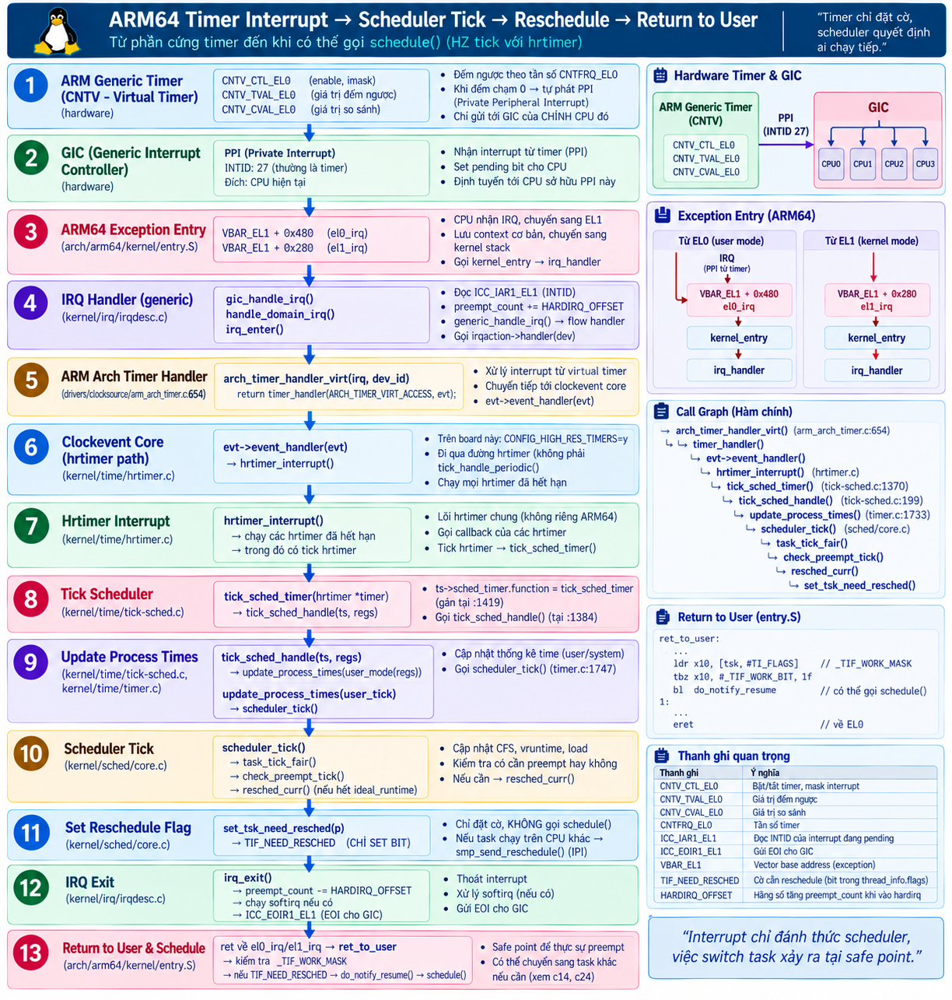
CNTV_TVAL_EL0, chạm 0 → tự phát PPI (không qua GIC "định tuyến" theo nghĩa NIC — PPI vốn đã gắn cứng với 1 CPU).GIC chuyển interrupt tới CPU như thế nào? PPI là per-CPU sẵn — GIC chỉ set pending trên đúng CPU sở hữu nó rồi báo exception; SGI (IPI) mới cần GIC "định tuyến" chủ động tới CPU đích.
scheduler_tick() được gọi từ đâu?
update_process_times() (kernel/time/timer.c:1747), bản thân hàm này được gọi từ tick_sched_handle() (tick-sched.c:222) — chạy trong ngữ cảnh hrtimer callback tick_sched_timer() vì board bật CONFIG_HIGH_RES_TIMERS=y.Tại sao scheduler không gọi schedule() trực tiếp từ IRQ handler? Xem Chương 14 —
preempt_count đang cộng HARDIRQ_OFFSET.schedule() được gọi lúc nào sau interrupt? Xem Chương 15 — tại safe point
ret_to_user (nếu ngắt EL0) hoặc preempt_schedule_irq() (nếu ngắt EL1 và CONFIG_PREEMPT).
scheduler_tick() từ timer interrupt handler theo kiểu "periodic" đơn giản.Board này:
CONFIG_HZ=200 (5ms/tick danh nghĩa), nhưng thực thi qua tầng hrtimer (CONFIG_HIGH_RES_TIMERS=y) — tick không còn là "ngắt phần cứng cố định chu kỳ" mà là một hrtimer tự tái lập lịch (tick_sched_timer), cho phép độ chính xác cao hơn và (khi CONFIG_NO_HZ_IDLE=y, board này CÓ bật) cho phép bỏ qua tick khi CPU idle để tiết kiệm năng lượng — điều PDF (x86, kernel 2.6 cũ) hoàn toàn không có khái niệm.
Kịch bản đầy đủ — Timer interrupt preempt Task A → Task B chạy
CPU0, Task A đang chạy ở EL0 (userspace). Timer interrupt xảy ra. Trace từng bước với CPU mode / EL / IRQ state / current / runqueue:
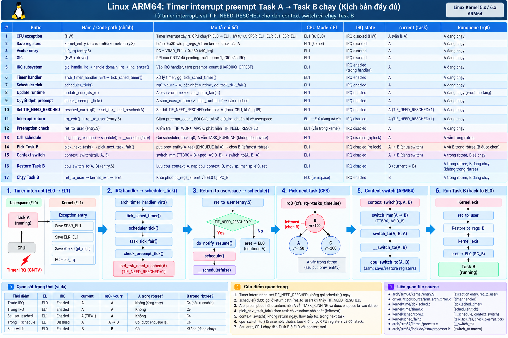
cpu_switch_to đổi 13 thanh ghi callee-saved + SP_EL1 (kernel stack) — tầng "hàm C nào đang chạy"; (2) msr sp_el0 đổi current — tầng "ai là task hiện tại"; (3) cpu_do_switch_mm (chạy TRƯỚC bước 1, trong switch_mm) đổi TTBR0/ASID — tầng "không gian địa chỉ nào". Thanh ghi user (x0-x30 lúc A/B ở EL0) không hề bị đụng bởi 3 thao tác này — chúng nằm trong pt_regs_A/pt_regs_B ở đỉnh kernel stack riêng của từng task, chỉ được khôi phục bởi kernel_exit ngay trước eret của chính task đó.
Wakeup Path — từ TASK_INTERRUPTIBLE tới chạy lại
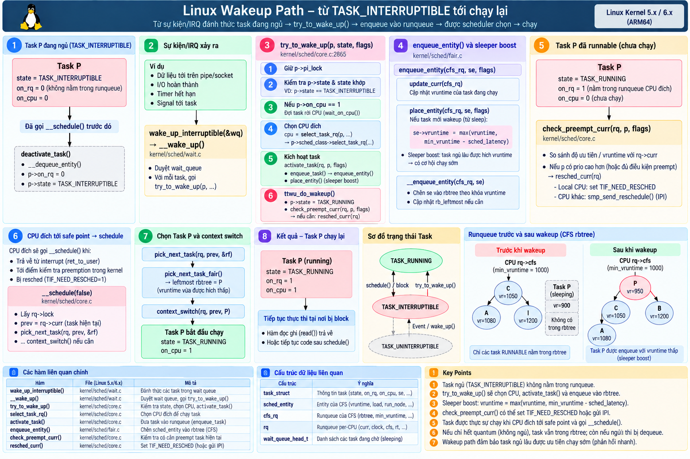
try_to_wake_up() đặt p->activated (0/1/2/-1 tuỳ nguồn đánh thức), rồi recalc_task_prio() dùng giá trị đó + sleep_avg để tính lại dynamic priority qua công thức phức tạp — phân biệt "đánh thức bởi syscall/kernel thread" vs "đánh thức bởi interrupt/deferrable function" để cộng sleep time khác nhau (38/128 vs toàn phần).Kernel hiện đại: không có
activated field, không có recalc_task_prio(). Chỉ có MỘT cơ chế duy nhất: place_entity() hích vruntime về gần min_vruntime nếu task vừa ngủ — không phân biệt nguồn đánh thức, không có bảng tra.
try_to_wake_up()
- WHAT
- Chuyển một task đang ngủ (state khớp mask
statetruyền vào) sangTASK_RUNNINGvà đưa nó vào runqueue của một CPU. - WHY
- Đây là điểm nối duy nhất giữa "một sự kiện xảy ra" (I/O hoàn tất, mutex unlock, signal, timer) và "scheduler biết có thêm task runnable".
- WHERE
- kernel/sched/core.c; gọi
select_task_rq()(:2384, dispatch quap->sched_class->select_task_rqtại :2389) vàttwu_queue()(:2731) - Callers
wake_up()/wake_up_interruptible()(qua__wake_up_common),wake_up_process(), đường signal delivery, mutex/semaphore unlock path
// Nếu p vừa mới CHẠY trên 1 CPU khác và context switch CŨ chưa hoàn tất hẳn
// (finish_task_switch chưa clear p->on_cpu), try_to_wake_up() PHẢI spin chờ:
smp_cond_load_acquire(&p->on_cpu, !VAL);
// lý do: không được enqueue p vào rq mới trong khi p vẫn "đang chạy" theo nghĩa CPU
// (dù đã bị chọn thay) — tránh 1 task chạy đồng thời "ở 2 nơi"rq_đích->curr: check_preempt_curr() → resched_curr(rq_đích) → (theo đúng logic đã trích ở c15) → smp_send_reschedule() → smp_cross_call(..., IPI_RESCHEDULE) → GIC bắn SGI tới CPU đích ngay lập tức, không đợi CPU đích tự nhiên vào IRQ tiếp theo.
Per-CPU Runqueue — SMP / multi-core ARM64
CPU0 ── rq0 ── cfs_rq0 (rbtree: task A, task B) CPU1 ── rq1 ── cfs_rq1 (rbtree: task C) (board S800: 2× Cortex-A72 — chỉ CPU0/CPU1 tồn tại) Mỗi CPU CHỈ chọn task từ rq CỦA CHÍNH NÓ (this_rq()). Một task runnable luôn nằm ĐÚNG MỘT rq tại một thời điểm — không có task nào "runnable trên 2 CPU cùng lúc". Đây là lý do rq riêng biệt giúp CFS scale: pick_next_task() trên CPU0 không cần lock rq1.
Việc "cân bằng" (không để 1 CPU quá tải trong khi CPU kia gần rảnh) là công việc riêng của load balancing — xem Chương 28.
Load Balancing — load_balance(), find_busiest_group()
| Function (thật, verify bằng grep) | File:line | Việc |
|---|---|---|
find_busiest_group(struct lb_env *env) | fair.c:9488 | phân tích các sched_group trong 1 sched_domain, tìm group bận nhất KHÔNG chứa local CPU |
load_balance(int this_cpu, struct rq *this_rq, ...) | fair.c:9836 | điều phối toàn bộ 1 lần cân bằng: gọi find_busiest_group → tìm busiest rq trong group đó → detach_tasks → attach_tasks |
detach_tasks(struct lb_env *env) | fair.c:7884 | gỡ (KHÔNG di chuyển ngay) các task đủ điều kiện khỏi busiest rq — giữ trong 1 list tạm |
attach_tasks(struct lb_env *env) | fair.c:8037 | gắn các task vừa detach vào local rq |
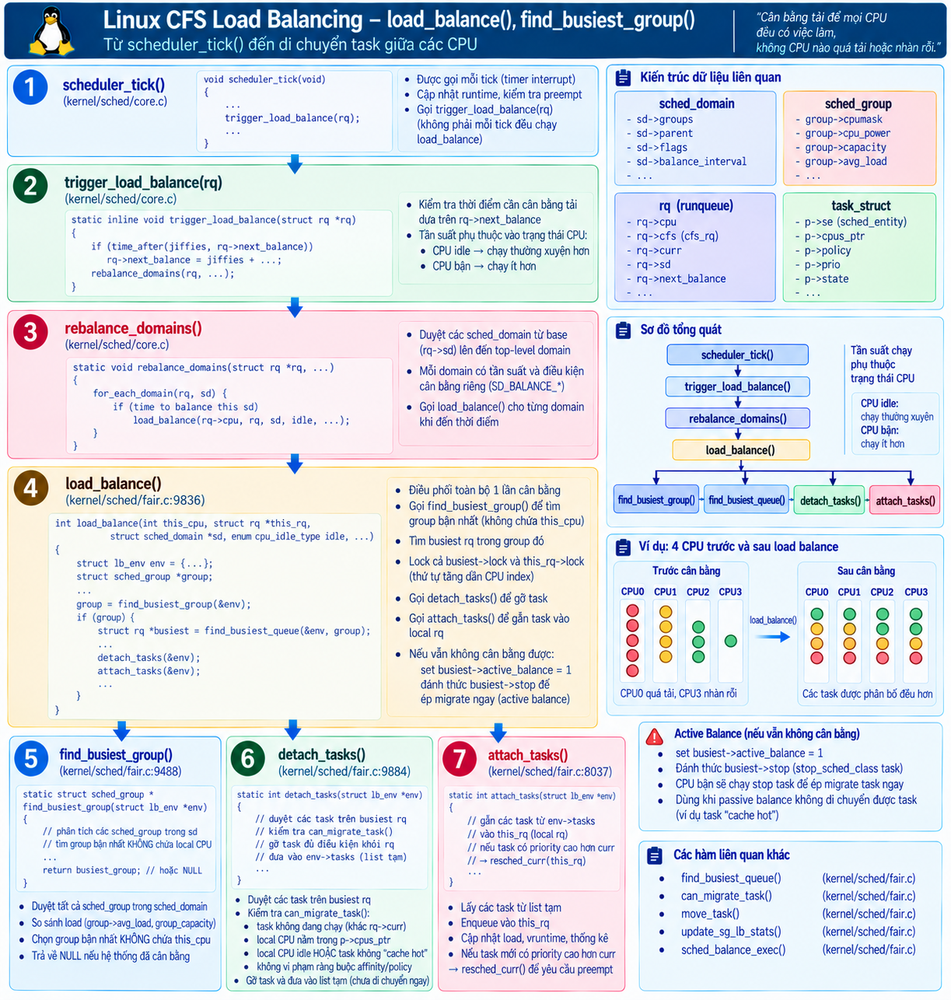
move_tasks()move_tasks() duy nhất vừa chọn task đủ điều kiện vừa di chuyển ngay lập tức (pull_task() = dequeue + enqueue trong cùng 1 bước).Kernel hiện đại: tách
detach_tasks() (gỡ, gom vào list tạm) và attach_tasks() (gắn hàng loạt) — tối ưu để giữ lock của busiest rq trong thời gian ngắn nhất có thể (chỉ trong lúc detach), giảm tranh chấp lock trên hệ nhiều CPU.Migration kernel thread riêng (PDF) → thay bằng
stop_sched_class chung cho mọi việc "ép chạy ngay lập tức" (migration, CPU hotplug) — xem c10, c30.
sched_domain được dựng (topology) — xem Chương 29: lấy từ device-tree cpu-map thay vì dò APIC ID như x86.
sched_domain & CPU Affinity
sched_domain = một tập CPU mà kernel cố gắng giữ cân bằng workload; phân cấp cây, mỗi domain chia thành nhiều sched_group. Trên board S800 (2× Cortex-A72, không NUMA, không hyper-threading), cây domain đơn giản nhất có thể: 1 domain duy nhất (MC — multi-core) gồm 2 group, mỗi group 1 CPU.
sched_domain từ thông tin APIC/cache topology dò được qua CPUID. ARM64 dựng từ device-tree — node cpu-map trong DTS mô tả cluster/core, kernel/sched/topology.c đọc cấu trúc này để build domain hierarchy tương ứng phần cứng thật.
CPU Affinity: task_struct->cpus_ptr/cpus_mask — bitmask CPU được phép chạy task này, đặt qua sched_setaffinity() (syscall 122, xem c32). select_task_rq() và load-balancer đều phải tôn trọng mask này khi chọn CPU đích.
CPU Hotplug — scheduler khi CPU online/offline
| Hook (thật) | File:line | Khi nào chạy |
|---|---|---|
sched_cpu_starting(unsigned int cpu) | core.c:7002 | CPU sắp online — khởi tạo lại rq/sched_domain cho CPU này |
sched_cpu_activate(unsigned int cpu) | core.c:6922 | CPU chính thức "schedulable" — bắt đầu nhận task |
sched_cpu_deactivate(unsigned int cpu) | core.c:6960 | CPU sắp offline — ngừng nhận task mới, bắt đầu drain |
sched_cpu_dying(unsigned int cpu) | core.c:7010 | CPU thực sự dừng — mọi task còn lại đã được migrate đi nơi khác |
CPU offline: sched_cpu_deactivate → stop nhận task mới
→ mọi task runnable trên rq này bị active-balance migrate đi
(qua stop_sched_class, xem c28) → sched_cpu_dying → CPU dừng
CPU online: sched_cpu_starting → rq khởi tạo lại (clock, load) → sched_cpu_activate
→ CPU bắt đầu được load_balance() coi là đích hợp lệ
Kernel Thread vs User Process — mm / active_mm
Ví dụ kernel thread trên board này: kworker/*, ksoftirqd/*, idle task (swapper/0, swapper/1), migration/stop task per-CPU.
task_struct->mm == NULL (không sở hữu address space riêng). Khi được chọn chạy, context_switch() (xem c18) KHÔNG đổi TTBR0 — nó "mượn" active_mm của task vừa chạy trước đó (enter_lazy_tlb): next->active_mm = prev->active_mm; mmgrab(...). Vì kernel thread chỉ chạy code kernel (nửa trên của address space, ánh xạ giống nhau ở mọi process), việc "mượn" TTBR0 cũ không sai — chỉ đơn giản không cần đổi, tiết kiệm hẳn phần MMU của context switch (xem chi tiết chi phí ở c21).
user process A (mm=MM_A) → kernel thread K (mm=NULL, active_mm=MM_A mượn từ A)
→ user process B (mm=MM_B)
Switch A→K: switch_mm KHÔNG chạy (K->mm==NULL) → TTBR0 VẪN LÀ MM_A → 0 chi phí MMU
Switch K→B: switch_mm CHẠY (B->mm=MM_B != K->active_mm=MM_A) → cpu_do_switch_mm bình thường
idle_sched_class: idle task (swapper/N) chạy trong cpu_startup_entry() (kernel/sched/idle.c:397) → vòng lặp do_idle() gọi schedule_idle() (:334) mỗi khi need_resched() — đây là task luôn tồn tại trên mỗi rq, đảm bảo pick_next_task() luôn có kết quả kể cả khi nr_running==0 (idle_sched_class luôn là "backstop" cuối cùng trong for_each_class).
Scheduler System Calls — mapping ARM64 hiện đại
| Syscall | Số hiệu (native AArch64) | File nguồn số hiệu | Service routine |
|---|---|---|---|
sched_setparam() | 118 | include/uapi/asm-generic/unistd.h | sys_sched_setparam |
sched_setscheduler() | 119 | — | sys_sched_setscheduler (SYSCALL_DEFINE3 tại core.c:5715) |
sched_getscheduler() | 120 | — | sys_sched_getscheduler |
sched_getparam() | 121 | — | sys_sched_getparam |
sched_setaffinity() | 122 | — | sys_sched_setaffinity (compat wrapper qua __SC_COMP) |
sched_getaffinity() | 123 | — | sys_sched_getaffinity |
sched_yield() | 124 | — | sys_sched_yield (SYSCALL_DEFINE0 tại core.c:6155) |
sched_get_priority_max() | 125 | — | sys_sched_get_priority_max |
sched_get_priority_min() | 126 | — | sys_sched_get_priority_min |
sched_rr_get_interval() | 127 (32-bit time_t) / 423 (time64) | — | sys_sched_rr_get_interval_time32 / _time64 |
setpriority() | 140 | — | sys_setpriority |
getpriority() | 141 | — | sys_getpriority |
nice() KHÔNG có syscall number native trên AArch64 (verify bằng grep, không suy đoán)grep -n "__NR_nice" include/uapi/asm-generic/unistd.h → không có kết quả. __NR_nice chỉ tồn tại trong arch/arm64/include/asm/unistd32.h:81-82 — bảng syscall compat dành cho tiến trình AArch32 (32-bit) chạy trên kernel 64-bit. SYSCALL_DEFINE1(nice, int, increment) (core.c:5096) vẫn tồn tại trong kernel như một service routine khả dụng, nhưng không có đường vào từ một tiến trình AArch64 native gọi qua số syscall — vì bảng include/uapi/asm-generic/unistd.h mà AArch64 dùng trực tiếp không gán số cho nó.Vì sao khác x86: x86-64 giữ syscall table riêng có cả các syscall "cũ/thừa" (đa số kiến trúc legacy làm vậy để tương thích ngược). ARM64 là kiến trúc sạch từ đầu (clean-slate, ra đời 2012) — cố tình chọn dùng thẳng bảng
asm-generic/unistd.h chung, loại bỏ mọi syscall coi là "thừa/có thể thay thế bằng syscall khác" (ở đây: nice(inc) tương đương setpriority(PRIO_PROCESS, 0, getpriority(PRIO_PROCESS,0)+inc)). Ghi chú (INFERENCE, chưa verify glibc source trong phiên này): theo hành vi ABI Linux đã biết, glibc trên AArch64 hiện thực nice() bằng cách gọi getpriority()/setpriority() ở userspace thay vì một syscall trực tiếp.
ARM64 SVC Entry — ví dụ sched_yield()
Trace tổng quát (giống hệt mọi syscall khác, xem thêm c22 cho phần exception entry): userspace đặt x8 = 124 (số hiệu sched_yield), svc #0 → HW nhảy VBAR_EL1+0x400 (el0_sync, khác el0_irq ở c22 vì đây là synchronous exception, không phải IRQ) → el0_sync đọc ESR_EL1.EC == 0x15 (SVC64) → el0_svc → el0_svc_common() → invoke_syscall() → sys_call_table[124](regs) → SYSCALL_DEFINE0(sched_yield) (core.c:6155).
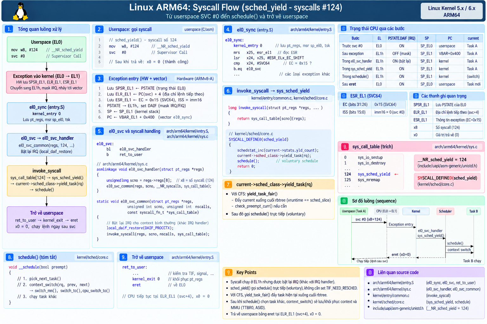
sched_yield() gọi schedule() trực tiếp trong thân syscall — vì đang ở process context với IRQ đã bật lại và không giữ lock nào, đây LÀ safe point, không cần qua cơ chế TIF_NEED_RESCHED.
Runtime Tracing & Debugging — quan sát scheduler thật
Hai công cụ có sẵn trong mọi kernel bật CONFIG_FTRACE/CONFIG_SCHEDSTATS (không cần cấu hình thêm nếu đã bật):
cat /proc/sched_debug # dump toàn bộ rq/cfs_rq/sched_entity mọi CPU:
# nr_running, load, min_vruntime, từng task + vruntime
cat /proc/schedstat # thống kê load-balance theo domain: lb_count, lb_balanced,
# lb_imbalance — đối chiếu với chương 28cd /sys/kernel/debug/tracing
echo 1 > events/sched/sched_switch/enable
echo 1 > events/sched/sched_wakeup/enable
echo 1 > events/sched/sched_wakeup_new/enable
echo 1 > events/sched/sched_process_fork/enable
echo 1 > events/sched/sched_process_exit/enable
echo 1 > tracing_on
cat trace # mỗi dòng: sched_switch: prev_comm=A prev_pid=.. prev_state=..
# ==> next_comm=B next_pid=..Thực nghiệm đối chiếu source ↔ runtime: viết 2 task (Task A sleep trên pipe rỗng, Task B write vào pipe để đánh thức A), bật sched_switch trace, so khớp thứ tự sự kiện với call chain ở Chương 25 — mỗi dòng sched_switch trong trace tương ứng đúng 1 lần context_switch() (c18) chạy xong.
perf sched record + perf sched latency cho thống kê độ trễ scheduling per-task; trace-cmd record -e sched là wrapper tiện hơn cho ftrace ở trên; nếu kernel bật CONFIG_BPF, bpftrace -e 'tracepoint:sched:sched_switch { printf("%s -> %s\n", args->prev_comm, args->next_comm); }' cho cùng thông tin real-time không cần ghi file trace.
gdb/kgdb soi trực tiếp cấu trúc (struct rq, struct task_struct) cần build kernel với CONFIG_DEBUG_INFO=y (và lý tưởng CONFIG_GDB_SCRIPTS=y để dùng script vmlinux-gdb.py có sẵn — cho phép lx-ps, lx-dmesg ngay trong gdb). Board S800 thật cắm UART có thể cấu hình kgdboc=ttyS0,115200 trên cmdline; với QEMU -M virt -cpu cortex-a72 -kernel Image -append "console=ttyAMA0" + -s -S để gdb attach qua cổng 1234 từ lúc CPU reset — hữu ích để đặt breakpoint ngay tại cpu_switch_to và xem thanh ghi đổi theo từng bước ở Chương 19.
Mental Model tổng hợp
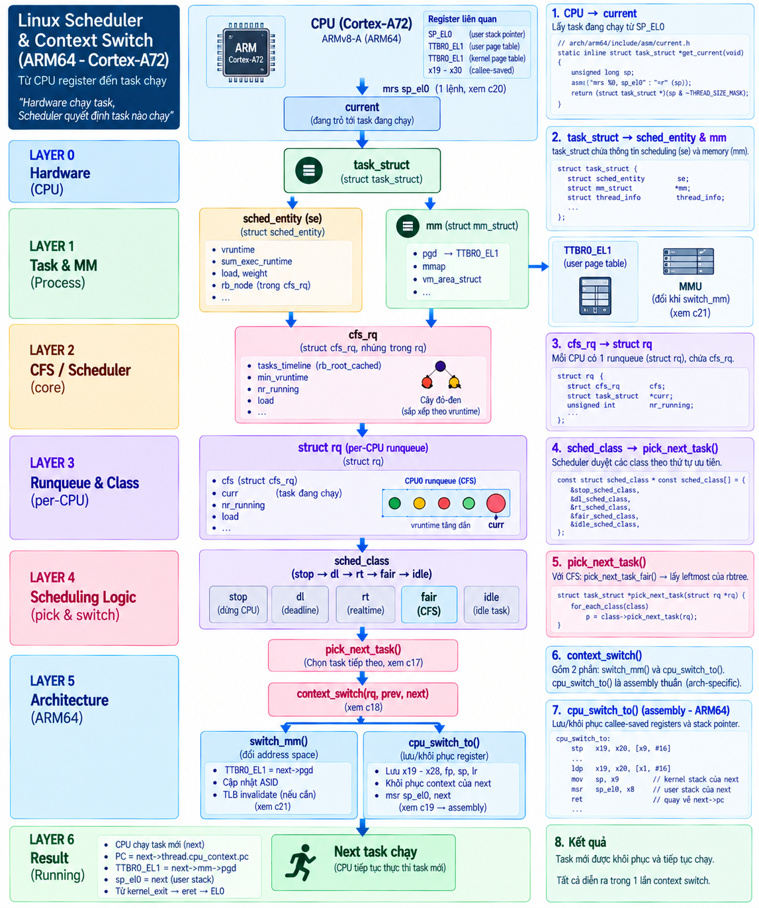
vruntime.2) Ai kích hoạt việc đổi task? KHÔNG BAO GIỜ trực tiếp từ IRQ handler — luôn set
TIF_NEED_RESCHED rồi đợi safe point (ret_to_user, preempt_enable, hoặc voluntary schedule()).3) current là gì? Nội dung thanh ghi
SP_EL0 — không phải biến toàn cục, không cần khoá, mỗi CPU tự nhiên khác nhau.4) Context switch thật sự đổi cái gì? 3 tầng tách biệt: 13 thanh ghi callee-saved (
cpu_switch_to), con trỏ current (msr sp_el0), và address space (switch_mm/TTBR0+ASID) — không tầng nào đụng thanh ghi user (nằm an toàn trong pt_regs).5) PDF và kernel hiện đại khác nhau ở đâu nhất? Toàn bộ cỗ máy heuristic "đoán interactive/batch" (active/expired array, sleep_avg, recalc_task_prio) của O(1) scheduler đã bị thay bằng nguyên tắc đơn giản: luôn chạy task có
vruntime nhỏ nhất.
Recommended Study Order — lộ trình đọc tiếp source
| Level | Chủ đề | Chương liên quan |
|---|---|---|
| 1 | task_struct, current, struct rq, schedule() | c07, c08, c16, c20 |
| 2 | sched_class, CFS, vruntime, wakeup | c10, c11, c12, c25, c26 |
| 3 | Preemption, timer tick, TIF_NEED_RESCHED | c13, c14, c15, c23, c24 |
| 4 | context_switch(), ARM64 assembly, MM switch | c18, c19, c21, c22 |
| 5 | SMP, load balancing, sched_domain | c27, c28, c29, c30 |
| 6 | Tracing, debugging, sửa source thử nghiệm | c34 |
Sau khi hiểu flow này từ source đến ARM64 assembly, bước tiếp theo hữu ích nhất là đọc song song với trace thật (c34): đặt breakpoint gdb ở cpu_switch_to, in $sp/$x19 trước/sau, đối chiếu đúng với bảng instruction ở c19.
Cheat Sheet — lệnh tìm source hữu ích
grep -n "^struct rq {" kernel/sched/sched.h
grep -n "extern const struct sched_class" kernel/sched/sched.h
grep -n "pick_next_task\b" kernel/sched/core.c
grep -n "define TIF_NEED_RESCHED" arch/arm64/include/asm/thread_info.h
grep -n "set_tsk_need_resched\|resched_curr\b" kernel/sched/core.c
grep -n "scheduler_tick()" kernel/time/timer.c kernel/time/tick-sched.c
grep -n "try_to_wake_up(struct task_struct" kernel/sched/core.c
grep -n "SYM_FUNC_START(cpu_switch_to)" arch/arm64/kernel/entry.S
grep -n "IPI_RESCHEDULE\|smp_send_reschedule" arch/arm64/kernel/smp.c
grep -n "^static int load_balance\|find_busiest_group" kernel/sched/fair.c
grep -n "__NR_sched_yield\|__NR_nice" include/uapi/asm-generic/unistd.h arch/arm64/include/asm/unistd32.h
grep -n "sched_cpu_starting\|sched_cpu_dying\|sched_cpu_activate" kernel/sched/core.c
# xác minh số dòng trước khi trích dẫn:
sed -n '1234p' file.c
# lịch sử thay đổi 1 hàm/khái niệm:
git log -S "prio_array" -- kernel/sched/
git blame kernel/sched/core.c -L 4462,4470Function Index (A–Z)
| Function | Chương |
|---|---|
__schedule() | c16 |
__switch_to() | c19 |
attach_tasks() | c28 |
check_and_switch_context() | c21 |
check_preempt_tick() | c13 |
context_switch() | c18 |
cpu_do_switch_mm() | c21 |
cpu_switch_to() | c19 |
detach_tasks() | c28 |
enqueue_entity() / enqueue_task_fair() | c11 |
find_busiest_group() | c28 |
get_current() | c20 |
load_balance() | c28 |
pick_next_entity() | c11, c17 |
pick_next_task() | c10, c17 |
pick_next_task_fair() | c10, c11 |
place_entity() | c25 |
resched_curr() | c15 |
schedule() | c16 |
scheduler_tick() | c13, c23 |
sched_cpu_activate/deactivate/starting/dying() | c30 |
select_task_rq() | c26 |
set_tsk_need_resched() | c15 |
smp_send_reschedule() | c15 |
switch_mm_irqs_off() | c18, c21 |
switch_to() (macro) | c19 |
try_to_wake_up() | c25, c26 |
update_curr() | c11 |
update_process_times() | c23 |
— Hết. Mọi function/struct/số dòng trong tài liệu này đã xác minh bằng grep/đọc trực tiếp trên Linux 5.10.241 tại Kernel/K-S800/Src/, đối chiếu với PDF Understanding the Linux Kernel Chapter 7 và các module đã nghiên cứu trước đó trong docs/diagrams/. —